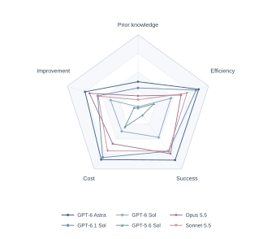
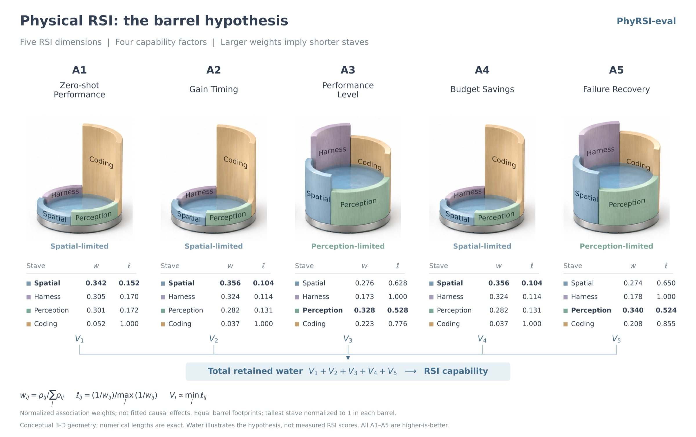
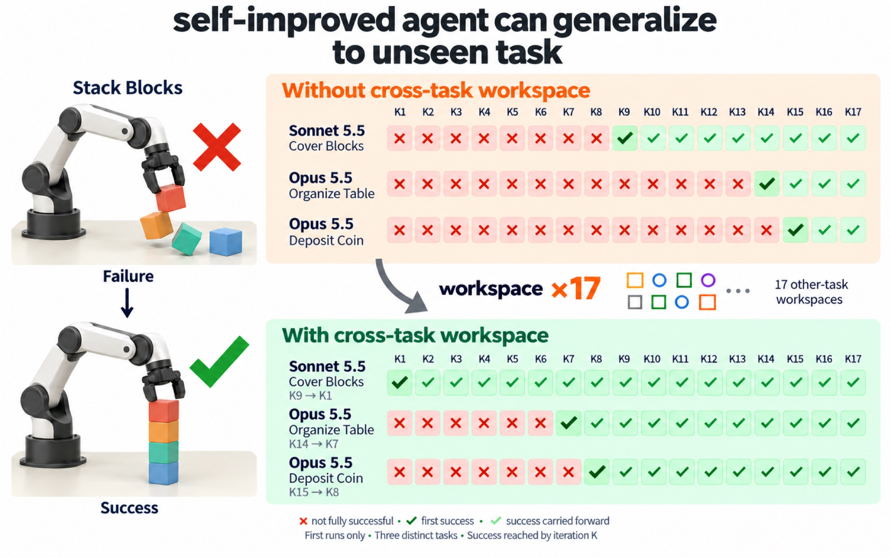
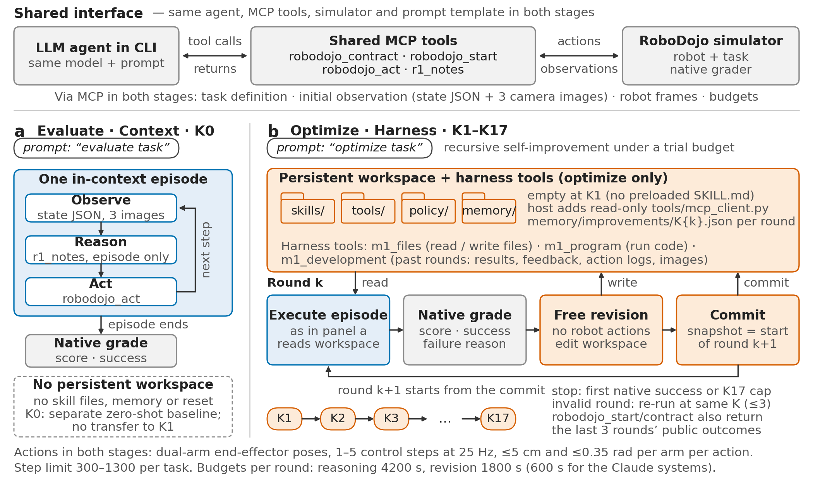
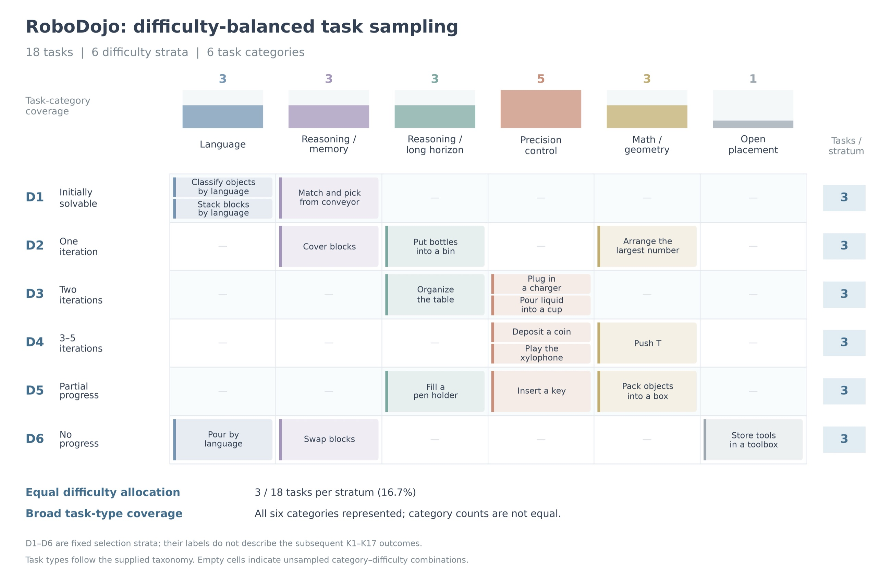
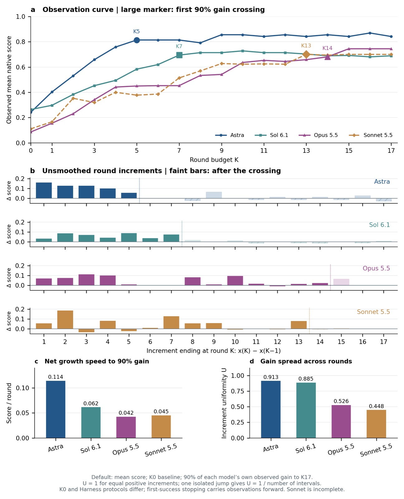
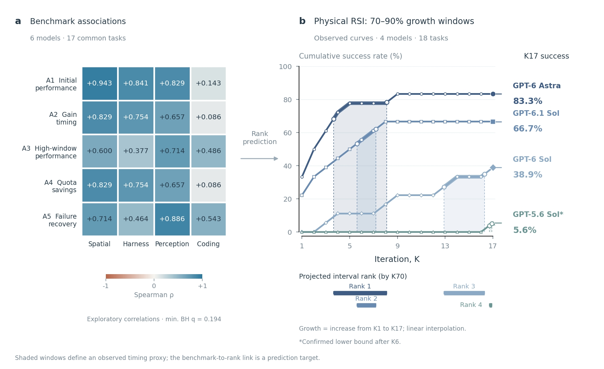
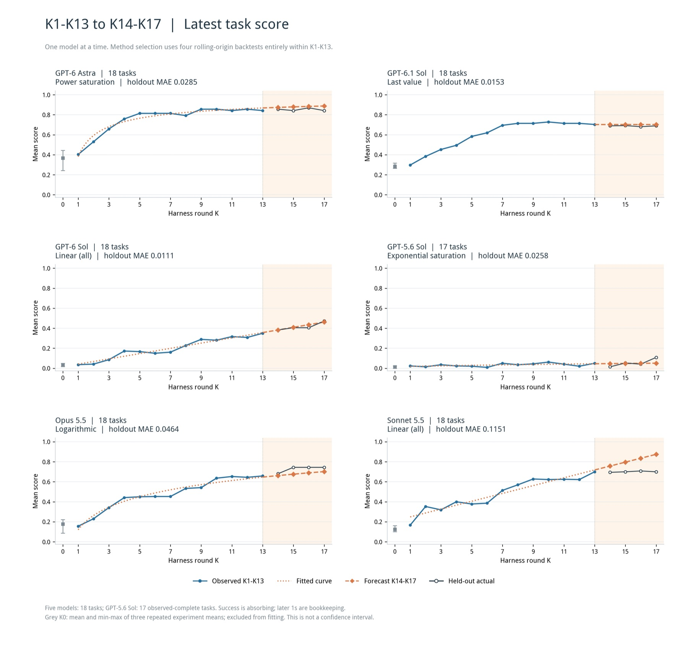
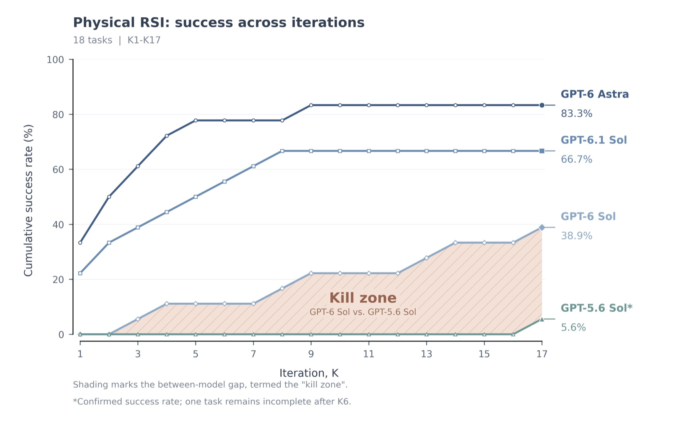
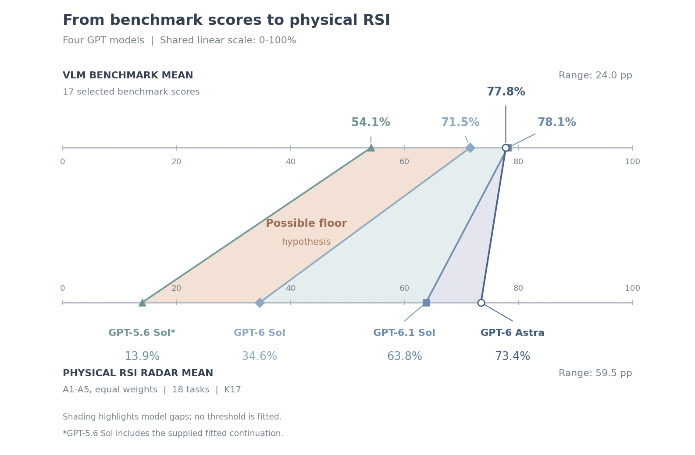

PhysRSI-Eval · Paper in preparation
Where is Physical RSI capability from?An Observational Scaling Law of Code-as-Policy Agents
We propose evaluation criteria for the recursive self-improvement (RSI) of Code-as-Policy agents in robot manipulation, trace where this capability comes from, and find that it is capped by the weakest of perception, spatial reasoning and coding — while the experience it accumulates transfers across tasks.
Results at a glance
Five-axis profiles of physical RSI, measured and predicted

Per-agent profiles




Core insight
Evaluation criteria for Code-as-Policy capability
Code-as-Policy agents drive robots with self-written control code and can revise that code from graded outcomes. We call this loop physical recursive self-improvement (physical RSI): a frozen model revises its own code, tools and notes from graded physical outcomes, without weight updates.
No benchmark yet measures the RSI of Code-as-Policy agents on manipulation tasks. Endpoint success over many independent attempts conflates search with improvement: at a per-attempt success rate of 0.1, 17 attempts already give an 83% chance of one success. We therefore score each agent by a five-axis RSI profile under a fixed budget of judged attempts, analyze these metrics experimentally, and trace the main sources of RSI capability.
Experimental setup
Two stages: evaluate, then optimize
Only the robot interface and MCP tools. No skills, no tool use, no workspace: one in-context episode measures the agent's prior.
Starts from a blank workspace with a limited number of attempts. After each graded attempt the agent freely summarizes its experience into skills, tools, policy and memory, until the first success or K17.

Agents: GPT-6 Astra, GPT-6.1 Sol, GPT-6.0 Sol, GPT-5.6 Sol, Claude Opus 5.5, Claude Sonnet 5.5, Gemini 4 and Gemini 3.1 Pro. Full five-axis profiles are available for the first six; Gemini 4 is a partial run.
7 tasks observed through K10: 2 of 7 solved (Arrange the largest number at K3, Cover blocks at K2); mean score 0.07 at K0 and 0.40 at K10. Not comparable with the 18-task, K17 profiles above.
Balanced task sampling
All 18 tasks come from RoboDojo. We sample them uniformly over difficulty — three tasks in each of six strata — and across six task types.

Where does RSI capability come from?
Quantify it, then predict it from benchmark factors
Quantifying RSI: score(metrics(model))
Each agent's run is reduced to five metrics, and each metric to a score on a fixed 0–1 scale:
| Metric | What it measures |
|---|---|
| A1 Prior knowledge | Mean native score in the zero-shot round K0, counting partial progress on failed tasks. |
| A2 Efficiency | How early the final gain over K0 is realized: 1 if all of it arrives at K1 and is kept, 0 if it arrives only at K17. |
| A3 Success | Mean score from the round where the agent first reaches 90% of its own gain through K17. |
| A4 Cost | Budget saved on solved tasks: one minus the physical attempt quota used up to the first success, out of 17. |
| A5 Improvement | Failure recovery: the share of tasks failed at K1 that are solved by K17. |


Predicting RSI from benchmark factors
We relate public VLM benchmark factors to the RSI metrics, first to find the main source of RSI capability, then to predict specific elements of the improvement curve, such as its inflection point and final score.


Leave-one-model-out predictions
Public VLM benchmark scores also approximate each agent's full profile. Each cell gives the reference value and the prediction from a model trained on the other five agents.
| Agent | A1 Prior knowledge | A2 Efficiency | A3 Success | A4 Cost | A5 Improvement |
|---|---|---|---|---|---|
| GPT-6 Astra | 0.368 / 0.290 | 0.859 / 0.842 | 0.851 / 0.781 | 0.843 / 0.810 | 0.750 / 0.651 |
| GPT-6.1 Sol | 0.284 / 0.275 | 0.822 / 0.804 | 0.703 / 0.737 | 0.808 / 0.736 | 0.571 / 0.664 |
| GPT-6 Sol | 0.031 / 0.149 | 0.466 / 0.522 | 0.472 / 0.561 | 0.372 / 0.576 | 0.389 / 0.468 |
| GPT-5.6 Sol | 0.012 / 0.000 | 0.225† / 0.176 | 0.104† / 0.000 | 0.301† / 0.344 | 0.056† / 0.000 |
| Claude Opus 5.5 | 0.177 / 0.182 | 0.609 / 0.613 | 0.744 / 0.665 | 0.579 / 0.648 | 0.688 / 0.541 |
| Claude Sonnet 5.5 | 0.124 / 0.041 | 0.695 / 0.518 | 0.701 / 0.685 | 0.698 / 0.373 | 0.563 / 0.625 |
| MAE | 0.051 | 0.054 | 0.065 | 0.124 | 0.089 |
Reference / predicted. † Includes a fitted continuation for one unfinished GPT-5.6 Sol task (K7–K17). The predictor for each axis was chosen among 98 configurations using these same leave-one-model-out errors, so the MAE is not an unbiased estimate on new agents. No uncertainty intervals are reported.
What drives Code-as-Policy gains on embodied tasks?
A balanced mix of abilities, and reusable experience
Physical Barrel Theory: there is a kill line
Perception, spatial reasoning and coding must come in a workable ratio. Below a minimum level on any of them, an agent cannot complete manipulation tasks, however strong it is elsewhere.


RSI builds reusable ability
Surprisingly, the experience an LLM agent accumulates generalizes across tasks: a workspace carried over from the 17 other tasks moves the first success on an unseen task from K9 to K1, K14 to K7 and K15 to K8 (cross-task figure under Results at a glance).
late-round success with the full loop vs. a workspace wiped every round
success on the trained layout vs. frozen workspaces on held-out layouts
The gains are improvement rather than resampling, though part of them is scene-specific. Ablation on GPT-6 Astra, six tasks.
Citation
BibTeX will be available when the paper is released.